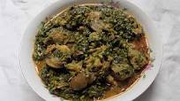

Vegetable soup

DESCRIPTION
Vegetable soup is a native to the yoruba people of nigeria. It has a lot of health benefits, it is known as EFO ELEMI MEJE among yoruba people. It can be eaten with swallows, rice, yam and so on.
INGREDIENTS
- Vegetable leaf, chopped
- Vegetable oil
- onion
- garlic
- 1 pound ground beef
- 1 pound cow skin(POMO)
- seasoning
- 2 teaspoons salt (optional)
- Tomatoes
- Ginger
- meat stock
- Fish
STEPS
- Heat enough vegetable oil in a pot
- Blend tomatoes, onions, pepper, Garlic, and Ginger
- pour the blended mixture into the heated vegetable oil, stir until properly fried
- Add seasoning and salt to taste
- Cut the cow skin into little bits. add meat stock, Fish, cooked beef, and cow skin
- Rince the chopped vegetable leaf
- add the chopped vegetable leaf, and allow to cook for 25 minutes